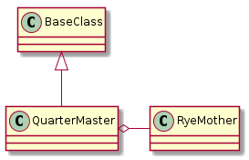

The QuarterMaster handles finding and retrieving plugin class-definitions.

These are the public attributes of the QuarterMaster. Only get_plugin and list_plugins are meant for users, the others are building blocks.
QuarterMaster |
|
QuarterMaster.list_plugins |
|
QuarterMaster.plugins |
|
QuarterMaster.get_plugin |
|
QuarterMaster.import_plugins |
| Parameter | Description |
|---|---|
external_modules |
List of non-tuna modules to look in for plugins |
parent |
Parent class to identify plugins |
group |
setup.py entry_point group |
name |
setup.py entry_point name |
exclusions |
List of modules to ignore |
The group and name are based on the setup.py entry_points variable. The entry_points uses an ini-file-like format with the form:
[group]
name = module
See the RyeMother for more information.
If you build the QuarterMaster with no arguments it will assume:
- There are no external modules to search
- The plugins all extend the
BasePluginclass- The group (from the
setup.pyentry_points) with plugins will be tuna.plugins- The name will be plugins
The defaults are based on the setup.py entry_points having the following in its string:
[tuna.plugins]
plugins = tuna.plugins
The tuna also has the following in the [tuna.plugins] section of the entry_points:
components = tuna.components
So to load components instead you would create the quartermaster like this:
quartermaster = QuarterMaster(name='components')
The entry_points for the tuna also has the following:
[tuna.subcommands]
subcommands = tuna.infrastructure.arguments
So to create a QuarterMaster to load the sub-commands you can use:
from tuna.interface.arguments import BaseArguments
quartermaster = QuarterMaster(group='tuna.subcommands',
name='subcommands',
parent=BaseArguments)
Note
This is just an example, the actual sub-commands are being retrieved from the RyeMother directly, since the QuarterMaster is only a convenience class to set some defaults to get plugins.
Say you had an external package named xytable that you wanted to use within the tuna so you created a plugin class in xytable.xytable named XYTable that inherited from the BasePlugin. Then to create the QuarterMaster you would pass in the module (file) name:
quartermaster = QuarterMaster(external_modules=['xytable.xytable'])
Once the QuarterMaster is built you retrieve the class definition for the plugin using the get_plugin method. Say we wanted to load the XYTable plugin from the External Plugins example, then you would get the class definition with:
XYTable = quartermaster.get_plugin('XYTable')
Then to use it you would instantiate the object (assuming in this case that it takes no parameters):
table = XYTable()